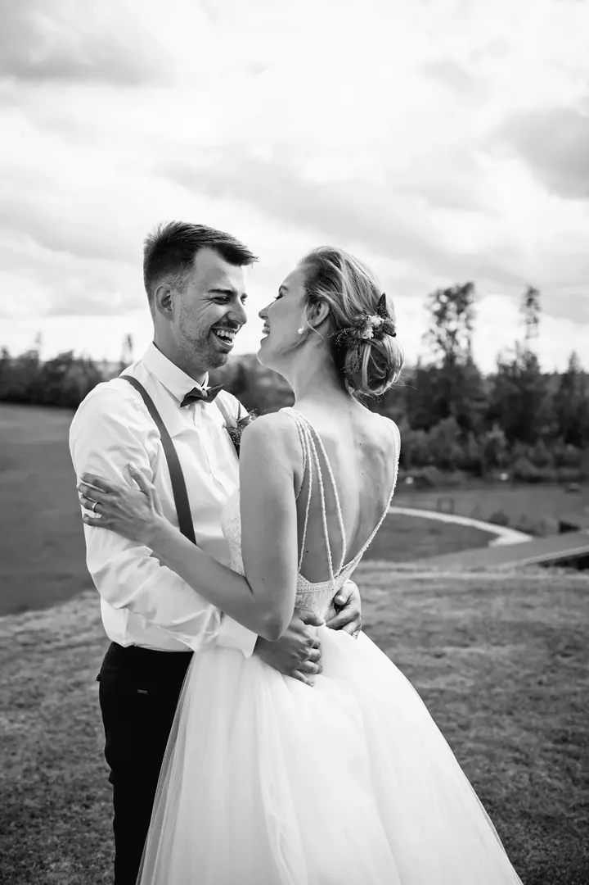
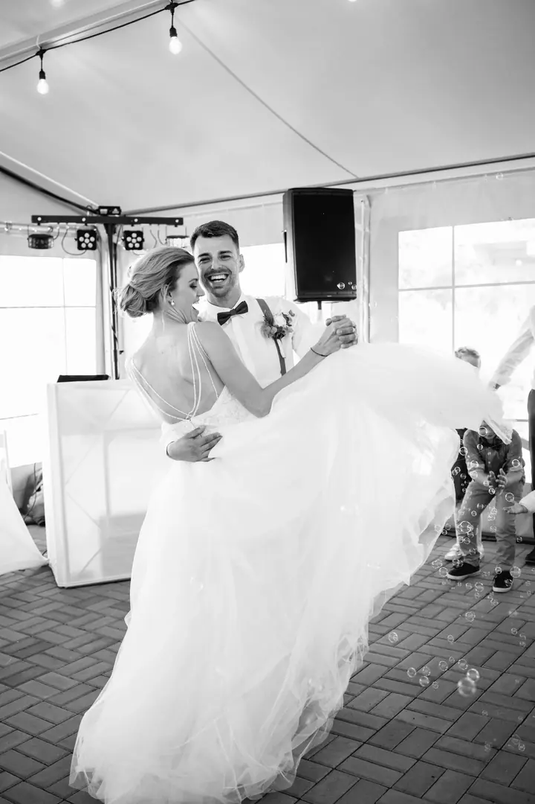
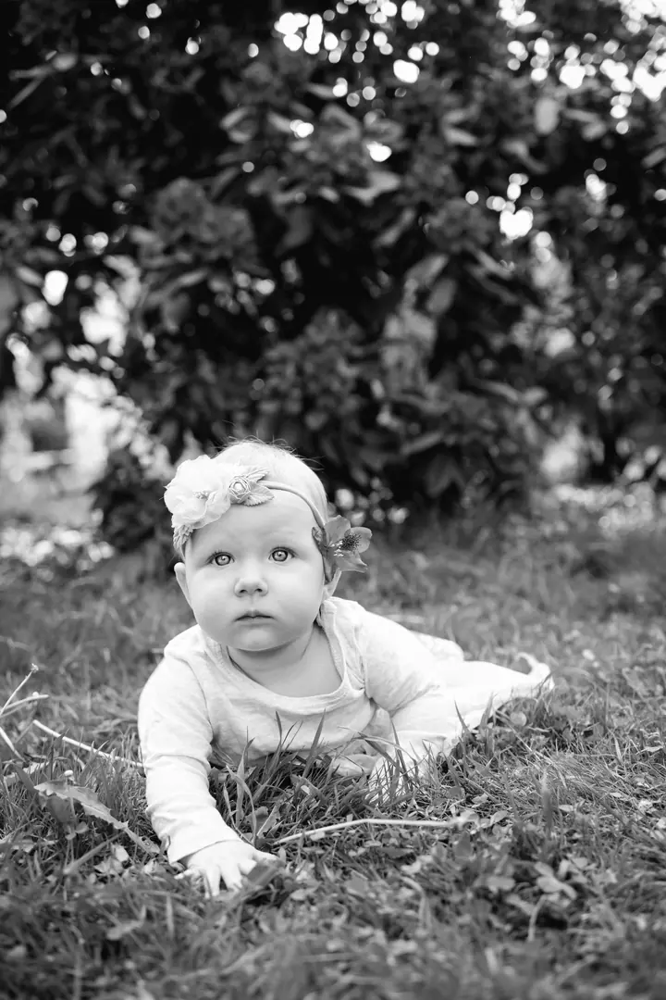
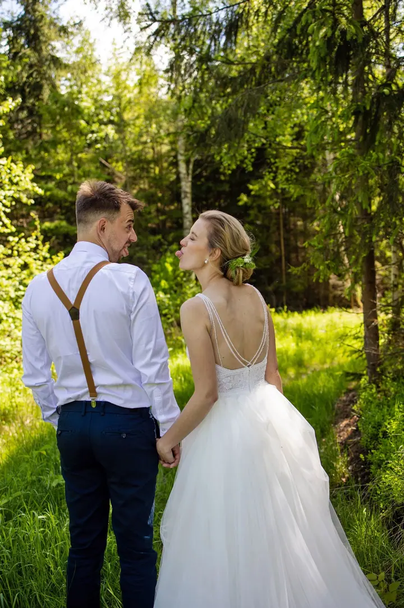
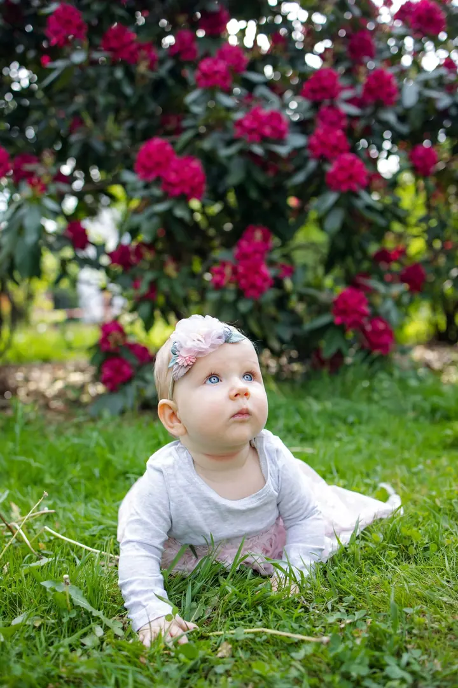
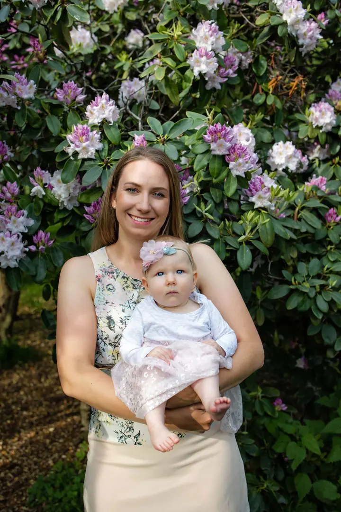
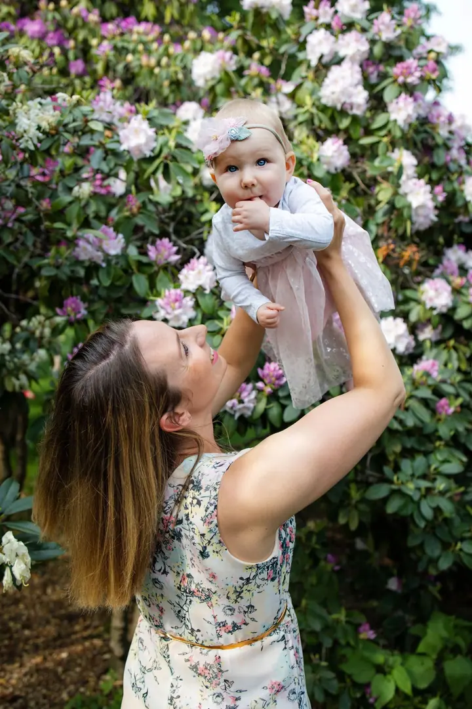
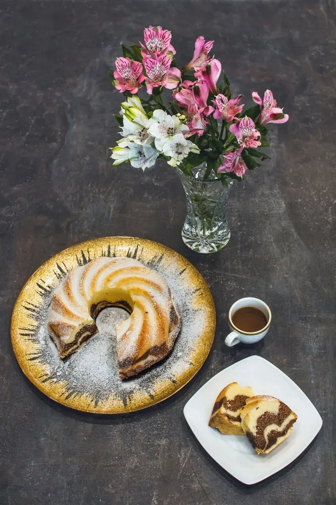
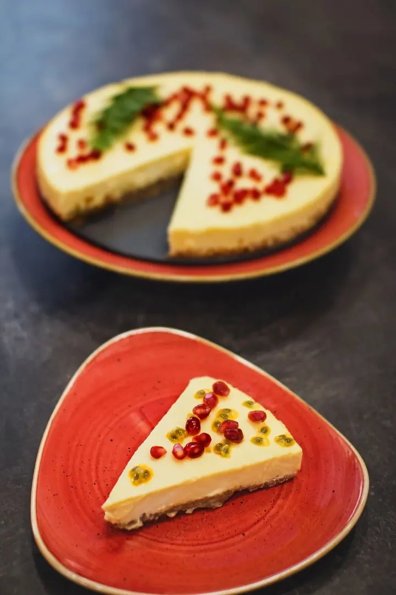

01 / 04
Svatební focení
Fotím celý svatební den, od přípravy až po večerní tanec. Pozoruji, co se kolem děje, a fotím to tak, jak to opravdu je, s emocemi a s příběhem.
Zeptat se na termín→








Fotím vaše společné příběhy
Zeptat se na termín →(01) Ahoj
Jmenuji se Romana Kroupová a zachycuji společné příběhy. Fotím svatby , rodiny s malými dětmi i produkty . Pozoruji svět kolem sebe a fotím ho takový, jaký je.
(02) Co fotím
01 / 04
Fotím celý svatební den, od přípravy až po večerní tanec. Pozoruji, co se kolem děje, a fotím to tak, jak to opravdu je, s emocemi a s příběhem.
Zeptat se na termín→02 / 04
Uvolněné focení venku, mezi květinami a stromy, kde se fotí i ti nejmenší. Chci, aby se vám k fotkám chtělo vracet ještě po letech.
Zeptat se na termín→03 / 04
Jídlo, dorty a výrobky fotím s důrazem na barvy, aranžmá a detail. I obyčejná věc na fotce může vypadat neobyčejně.
Zeptat se na termín→Dále nabízím
Fotím také reportáže z akcí a událostí. Zajímají mě přirozené momentky a atmosféra, ne strojené pózy.
↗(04) Postup
Od první zprávy po hotovou galerii.
Krok 1 z 4
Napište mi přes formulář nebo na e-mail, co a kdy chcete fotit. Ověřím termín a domluvíme se na dalším postupu.
Krok 2 z 4
Probereme vaše přání, místo i průběh focení. U focení venku pro vás ráda vyberu vhodná místa předem.
Krok 3 z 4
Fotím v klidu a bez strojených póz. Poradím vám, jak se postavit, a zbytek necháme na atmosféře.
Krok 4 z 4
Fotky vyberu, pečlivě upravím a pošlu vám je hotové, abyste se k nim mohli kdykoli vrátit.
Každý okamžik prožíváme jen jednou
(05) Za objektivem
Jsem obyčejná holka, co ráda dělá věci po svém a miluje smích. Fotografii propadám stejně jako UX designu a grafice a dobré jídlo nikdy neodmítnu. Ráda fotím svatby, produkty, experimentální fotky i běžné momentky.
Každý okamžik v našem životě prožíváme jen jednou. Mým cílem je ten čas zachytit tak, abyste se k němu mohli vrátit se všemi emocemi. Každá fotografie pro mě musí mít příběh a význam.
V letech 2014 a 2015 jsem fotila projekt 365 dní Skryté identity: celý rok jsem každý den vytvořila jednu fotografii a doplnila ji citátem do života. V roce 2017 jsem ho vystavila na své první vernisáži v Akordu Ostrava. Několik let jsem byla také členkou projektu Week of Life, kde jsem každý den fotila devět fotografií ze svého života.
Romana
Romana Kroupová · Svatební, rodinná a produktová fotografka
Určitě. Poradím vám s postojem i pózou a většinu času si při focení prostě povídáme. Nejlepší fotky obvykle vzniknou, když na foťák zapomenete.
Ano, svatbu ráda nafotím od přípravy až po večerní zábavu. Rozsah focení přizpůsobím tomu, jak bude váš den vypadat.
Nejčastěji venku, v parku nebo v zahradě mezi květinami. Místo vybereme společně podle vašich představ a ročního období.
Ano, fotím jídlo, dorty i další výrobky. Napište mi, co potřebujete nafotit a k čemu budete fotky používat, a domluvíme se.
(07) Kontakt
Napište pár vět o tom, co si představujete, a termín, který se vám hodí.